Brnad Story/브랜드스토리
-
혁신, 직관과 전문성으로 탄생한 커피 브랜드 입니다.
5대륙의 유명하고 순수하고 고급스러운 9가지 아라비카로 구성된 탁월한 블렌드 인 커피의 높은 품질과 뚜렷하고 부드러운 맛을 자랑합니다.
-
-
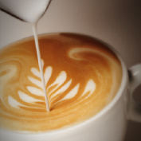
MISSION
일리는 완벽한 한 잔의 커피, 즉 감각과 정신으로 모두 즐길 수 있는 한 잔의 커피를 개발하는 데 계속적으로 헌신하고 있습니다.
-
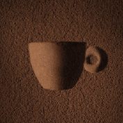
VISSION
우리의 꿈은 최고급 원두로 시작하여 한잔의 커피로 여러분의 감각과 정신을 즐겁게 하는 것으로 완성됩니다.
-
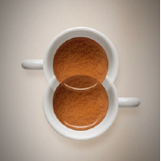
VALUE
우리는 투명성, 지속 가능성 및 인력 개발에 대한 약속을 통해 시간이 지남에 따라 우수한 이해 관계 가치를 공유 할 수 있습니다.
-
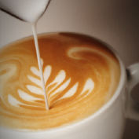
History/히스토리
-
illy History
Francesco illy는 1933 년에 illycaffè를 설립했습니다. 현대식 에스프레소 기계의 청사진으로 여겨지는 일레타의 1935 년 발명품은 커피 준비에 혁명을 일으켰습니다.
그의 혁신적인 포장 방법은 가압에 기반을 두었으며 1940 년대 스웨덴과 네덜란드에 illy의 초기 수출을 가능하게 했습니다. -
-
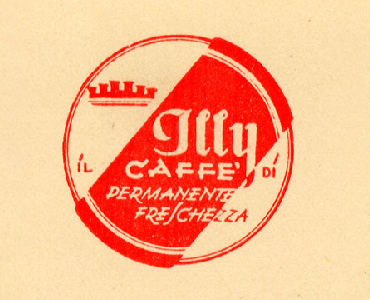
1933
세상에서 가장 좋은 커피를 제공한다는 꿈에 기반한 일리 카페를 설립했습니다.
-
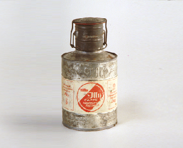
1934
illycaffè는 자사의 혁신적인 질소압축포장 시스템을 특허권으로 보유하고 있습니다.
-
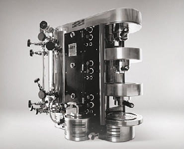
1935
현재의 커피 머신의 최초의 모델인 "일레따"는 증기를 압축 공기로 대체하는 혁신적인 기계입니다.
-
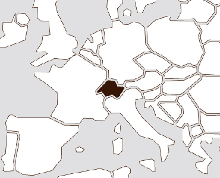
1939
illycaffè는 유럽의 에스프레소 문화 대사가되어 스위스 최초의 해외 기지를 통해 수출을 시작합니다.
-
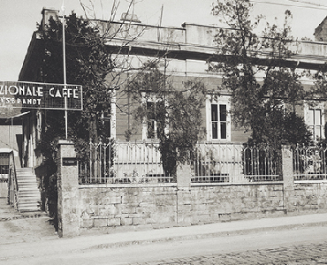
1957
최초의 연구 실험실을 설립하여 권위있는 국제 과학 기관과의 시너지 효과를 창출합니다.
-
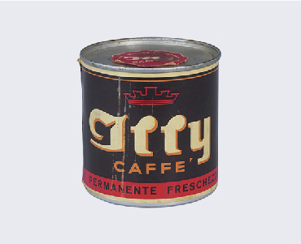
1957
새로운 생산 부서에서는 작은 캔에 작고 둥근모양의 가정용 분쇄커피를 만들었습니다.
-
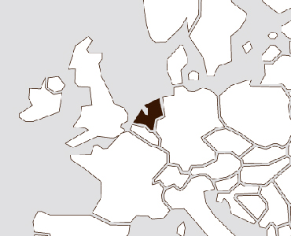
1962
네덜란드에 첫 지점을두고 북유럽에 도달했습니다.
-
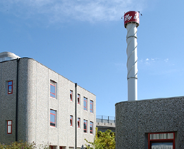
1965
illycaffè는 Flavia를 거처 현재의 본사 건물로 이전합니다.
-
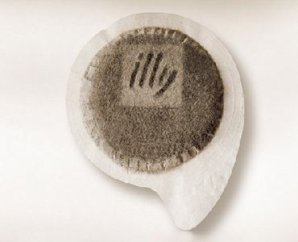
1974
illy는 1인용 분쇄 커피인 포드를 판매하는 최초의 회사가 되었습니다.
-
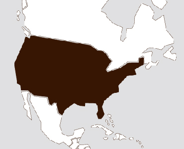
1980
최초의 이탈리안 로스터는 바다를 가로 질러 에스프레소 문화를 수출합니다.
-
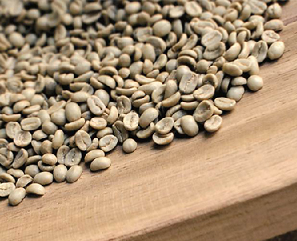
1982
illycaffè는 원두의 색상과 모양을 분석하여 각각이 완벽하다는 것을 입증하는 디지털 분류 기계의 특허를 취득합니다.
-
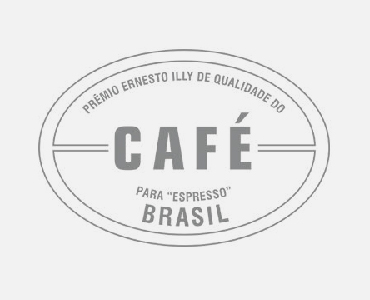
1991
Prêmio Ernesto Illy de Qualidade do Café para Espresso는 재배자와 직접적인 관계를 통해 기원의 최고의 품질을 보장합니다.
-
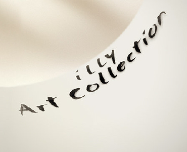
1992
아름다움과 미학 : Francesco Illy는 Matteo Thun이 디자인한 상징적인 컵에 대한 아이디어를 제시합니다.
-
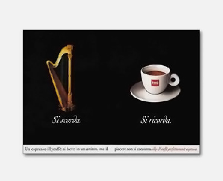
1992
새로운 광고 캠페인은 리카르도 일리 (Riccardo Illy)가 고안 한 일리 블렌드의 독창성에 초점을두고 있습니다.
-
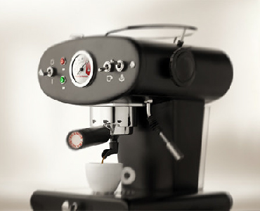
1995
Illetta 발명 60 년 후, 손자인 Francesco Illy가 Francis Francis를 출시했습니다!
-
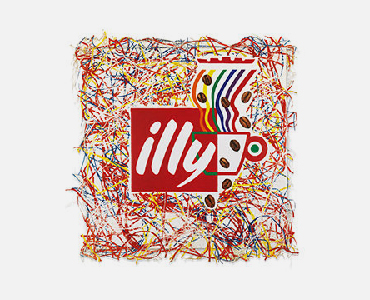
1996
제임스 로젠 퀴 스트 (James Rosenquist)가 새로운 illy 로고를 제작하여 헌정합니다.
-
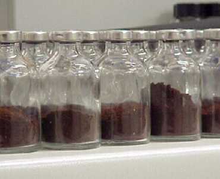
1998
AromaLab은 트리 에스테 (Trieste)의 사이언스 파크 (Science Park) 지역에서 시작합니다.
-
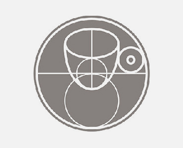
1999
Università del Caffè 는 식물에서부터 컵에 이르기까지 커피의 전체 공급망을 다룹니다.
-
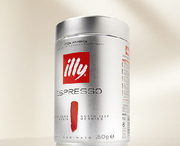
2001
"250g"홈 캔은 바에서 사용되는 미니어처 버전으로써 국제적인 아이콘이 됩니다.
-
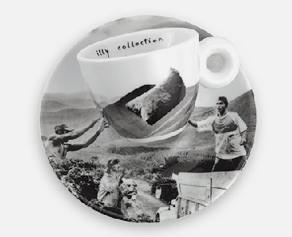
2002
훌륭한 사진 작가 인 Sebastião Salgado와의 만남을 통해 커피를 즐기는 모든 사람들에게 커피의 천국으로 여행이 시작됩니다.
-
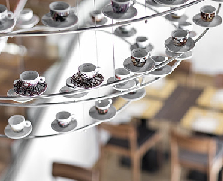
2003
illycaffè는 espressamente illy, 본격적인 이탈리아 바 프로젝트를 시작합니다.
-
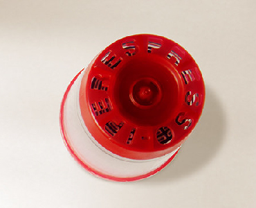
2006
5 가지 국제 특허가 적용되는 Iperespresso 캡슐은 강렬한 향과 부드러움으로 커피를 추출합니다.
-
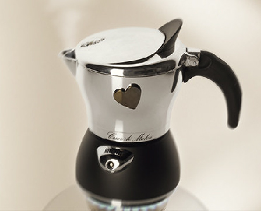
2007
illy 의 연구는 이탈리아 사람이 좋아하는 커피의 감각적 속성을 개선하기 위해 illy moka를 개발합니다.
-
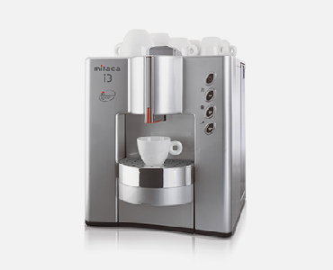
2008
사무실용 커피 시스템 전문가인 Mitaca의 주식 자본에 illy 투자.
-
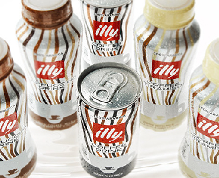
2008
코카콜라와 illy의 협업으로 시원한 병 커피로 독특한 illy 블렌드가 "ready to go"로 제공됩니다.
-
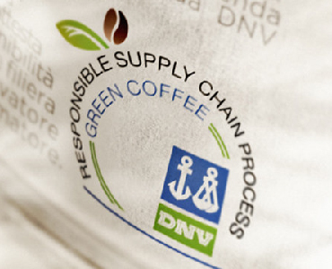
2011
DNV GL이 발급 한 RSCP 인증은 체인의 모든 이해 관계자에 대한 사회적, 환경 적 및 경제적 영향을 평가합니다.
-
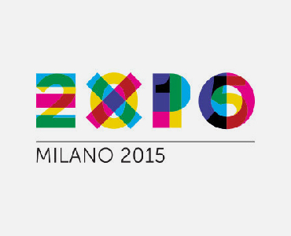
2015
역사상 가장 큰 커피 축하 행사 : 2015 년 엑스포와 illy는 특별한 이벤트 프로그램을 조직합니다.
-
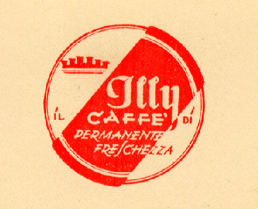
Quality/퀄리티
-
illy Quality
illy는 체인 프로세스 인증을 획득한 세계 최초의 회사가되었습니다. 이 인증은 illy의 공급 체인의 지속 가능한 관행, 특히 공급업체와의 관계에 대한 illy의 품질에 대해 입증합니다.
illy의 관행에 기반한 혁신적인 인증 모델을 수립하여 품질 개선 및 가치 창출에 중요한 역할을 부여합니다. -
-
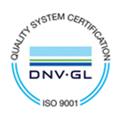
ISO 9001
1996 년 illy는 생산 시스템 전반에 걸쳐 엄격한 품질 요구 사항을 준수하는 것으로 입증된 ISO 9001 인증을 획득한 유럽 최초의 커피 회사였습니다.
-
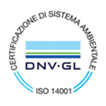
ISO 14001
illy는 2003 년 국제 표준 인 ISO 14001 인증을 획득하였으며, 이는 기업 활동의 환경 영향을 모니터링하는 경영 시스템의 효과를 수립하는 모든 유형의 기업에 적용 할 수있는 국제 표준입니다.
-
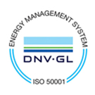
ISO 50001
ISO 50001은 에너지 관리에 대한 체계적인 접근 방식을 기반으로하여 에너지 성능을 지속적으로 향상시킵니다. 이는 지속 가능성을 위해 품질 관리 및 환경 관리를 개선하기위한 글로벌 노력에 에너지 관리를 통합하는 것을 용이하게합니다.
-
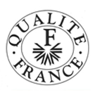
Qualite France
프랑스 정부 신용 기관인 Qualite France는 3개월마다 정밀 검사를 통하여 농산품 중 최고 품질에 대한 자격을 주는 유일한 기관입니다. 회사의 생산 프로토콜이 최적의 소비자 만족을 보장하기 위해 사양을 준수함을 증명합니다. Illy는 1992 년에 인증되었습니다.
-
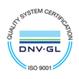